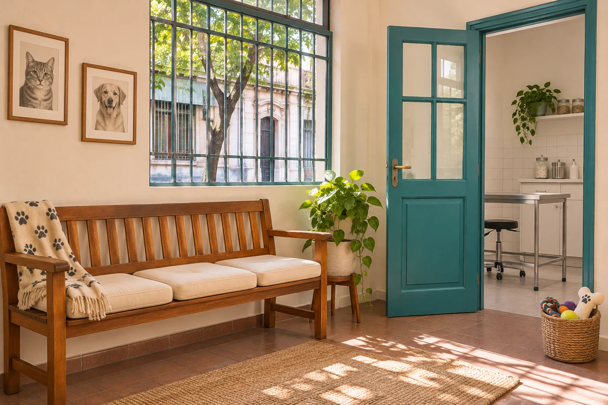

Su historia, a mano
Libreta sanitaria, estudios previos y el detalle de la medicación que esté tomando.
Para consultar por una visita, escribinos y contanos qué necesita tu perro o tu gato.
Podés contarnos su nombre, su edad y el motivo de la consulta para empezar la conversación.
{{WHATSAPP_VISIBLE}} Abrir WhatsApp Número demo. No recibe consultas reales ni confirma turnos.Esta demo no ofrece guardia ni atención de urgencias. Si necesitás atención inmediata, contactá una guardia veterinaria de tu zona.

Imagen ilustrativa generada con IA.Libreta sanitaria, estudios previos y el detalle de la medicación que esté tomando.
Correa para tu perro y transportadora cerrada para tu gato. Una manta conocida puede acompañarlos.
Anotá los cambios que notaste y todo lo que quieras conversar durante la consulta.
El botón abre WhatsApp con un mensaje preparado. El número es de demostración y no confirma reservas.
Sí, esta propuesta de clínica está pensada para perros y gatos. Los servicios definitivos están pendientes de confirmación.
Se agregarán cuando estén confirmados. Por ahora esta página muestra únicamente el barrio de la demo: {{BARRIO}}.
Contanos cómo se llama y qué necesita. Te leemos.